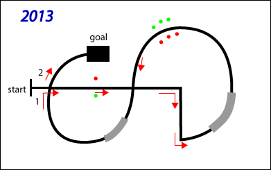

情報処理応用 ー Robocar Programming
2013課題
実技(50%)

- start に静止させたロボカーをラインに沿って２周後、
60 ±５秒にgoal エリアで止める。
走行中、旗門(コロンで表示)に触れてはいけない。- 途中のグレーゾーンではスロー走行、LEDを点滅させること。
- 出走は最大 5 回。ただし、期末試験時間内、かつ、
出走回数の少ないグループを優先する。
- 課題クリアで50点。
旗門一つ倒すごとに -1 ポイント。- コースを外れ、人力で戻さざるを得なくなったら -5 ポイント。
- スチレンボードから落ちたら失格。
- その他の加点項目考慮中。
- クランクで３回転する。
- 走行中にバックグラウンドで音楽を鳴らす。単なるブザー音は不可。
- 特定のパターンでボタンを押したときしか、ロボカーが走り出さない。
- その他、教員をうならせるアイデア。
プログラム(30%)
実走したプログラムを提出(グループでひとつ)。採点のポイントは、
- 提出されたプログラムは授業をよく聞いていると思えるか。
- Mtr_Run_lv( ) ベタ打ちがなぜダメかを理解し、プログラムで実践しているか。
- プログラムの設計をたて、関数に機能分担できているか。
- 関数の引き数、戻り値を理解しているか。
- 意味のある関数、意味がわかる関数名・変数名をつかっているか。
- プログラムのインデントが揃っているか。
- その他、採点中に気がついたこと。
授業への取り組み(20%)
個人課題(10%)、グループ課題(10%)。
back